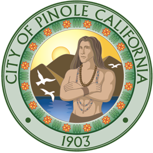

City of Pinole | Jan. 2020 – Jun. 2022 | On-Site: Pinole, California
As Vice President of the Interact Club of Pinole, I lead volunteer efforts that served the broader Pinole community. I organized city-wide clean-up events, food drives, and other service projects aimed at improving the lives of local residents. Some events included Pinole Shores clearn up, where we picked up trash and miscellaneous items from the beaches of Pinole. Halloween Night in Fernandez Park where there were games, candy, and activites for the kids of Pinole to wear their Halloween costume and spend a night with their families. Christmas Tree lighting in downtown Pinole, where the whole town comes together and lights the big Christmas Tree that is set in the town's center. Working closely with Rotary International and city officials including previous mayor Devin T. Murphy and current mayor Cameron Sasai. I helped strengthen partnerships between youth leaders and civic institutions. I was responsible for coordinating event logistics, assigning tasks, and motivating members to participate actively. Our projects had a visible impact on the city of Pinole and encouraged greater community involvement. Through this role, I developed strong leadership, communication, and planning skills. It also taught me the importance of civic responsibility and public service beyond the classroom.